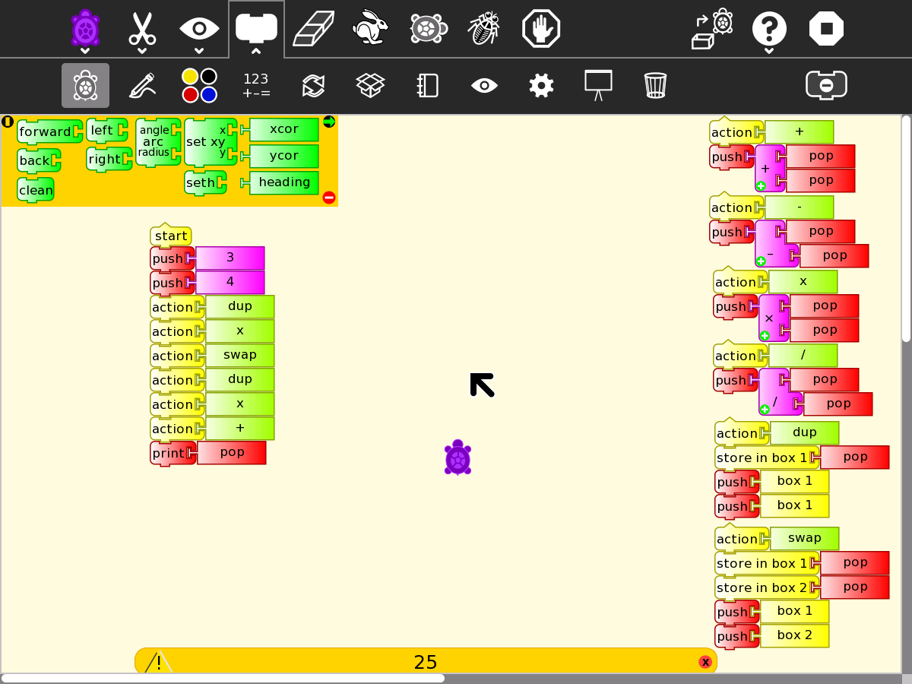

Stack Programming¶
The Forth programming language uses a stack for computations.
On the right of the screen, the Forth words + - x / DUP and SWAP are implemented with blocks.
On the left, a Forth like program to compute 3^2 +4^2 = 25


File:Turtle Art Activity forth.ta
What computations can you make with this set of words?
Make additional words with Turtle blocks
The - and / words process the operands on the stack in the reverse order to Forth, you can fix the word definitions on the right with SWAP